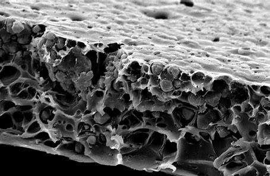

Curls-On-The-Block-Project
I am currently working on a project with a non-profit organization called Blueprint. This project involves coding a new website that contains a database for people with curly hair. This website will contain information of various products and hairstyles for different hair types.

Research Under Bowman Lab
I am currently doing research on thiol-aminols and thiol-amides for the Bowman Lab at CU Boulder. This research involves synthesis reactions, analyzing products, seperations, and extractions.

Model Development for Separation Via Gas Permeation using Carbon Membrane
I collaborated with peers on a research paper detailing the best mechanisms to model gas permeation through a carbon membrane. We also presented out findings to other fellow peers.